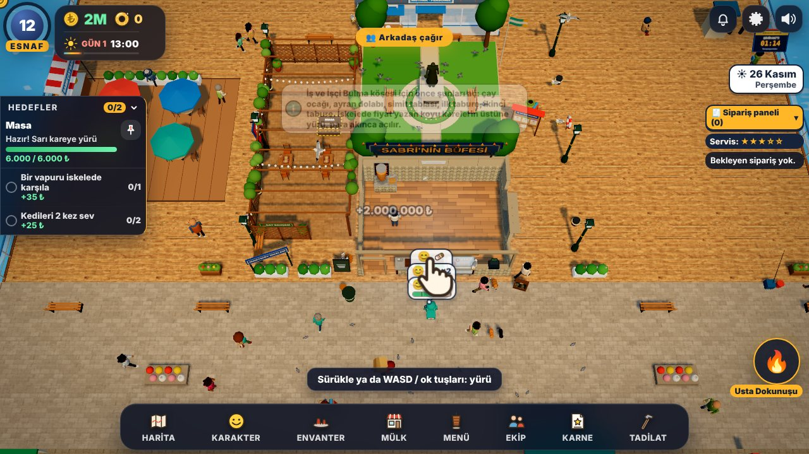
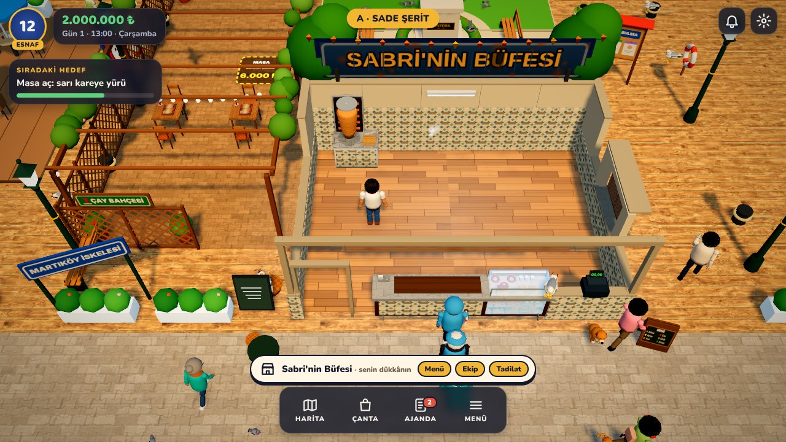
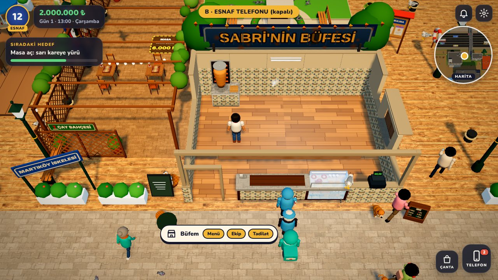
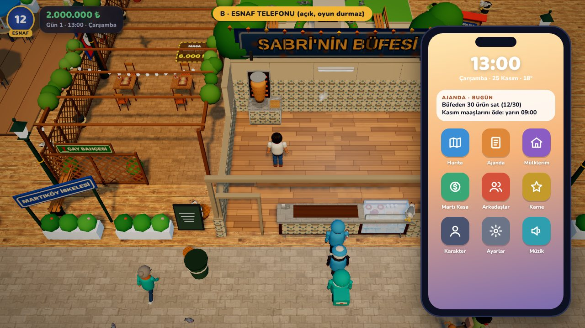
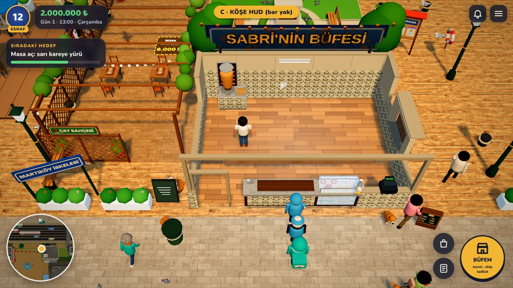
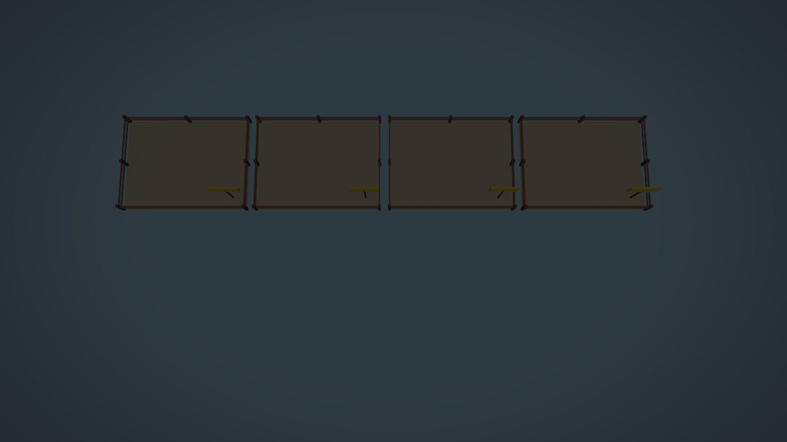
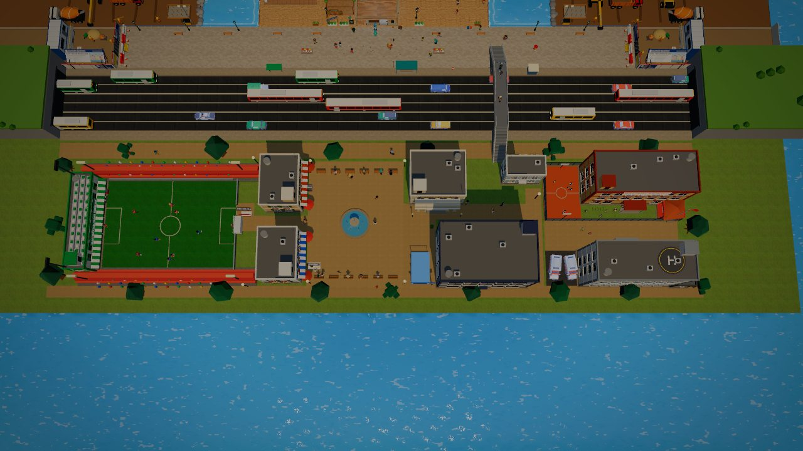

Alt bar sadeleşiyor, mülk işleri emlakçıya taşınıyor
Şu an alt barda 8 ile 10 arası düğme var, Mülk penceresinde de 8 sekme daha. Aşağıda her şeyin nereye taşınacağı, 3 farklı ekran yönü, emlak ajansı ve arsa şantiyesi var. Kod henüz değişmedi: senin seçimini bekliyor.
Bugünkü hâl

Seviye 12'de alt bar: Harita, Karakter, Envanter, Mülk, Menü, Ekip, Karne, Tadilat. Kedi varken Kediler, 2. günden sonra Görevler de ekleniyor.
Ne nereye gidiyor
Şu anki yer
Karar
Yeni yeri
Harita
KALIR
Her yönde ekranda kalıyor (düğme ya da köşede mini harita)
Envanter
KALIR
"Çanta" adıyla. İçinde sadece eşya ve sandıklar kalıyor
Görevler + Günlük + Karne
BİRLEŞİR
Tek "Ajanda": bugünün işleri, hedefler, karne notları
Menü, Ekip, Tadilat
BAĞLAMA GEÇER
Kendi dükkânının yanındayken çıkan tek "Büfem / Dükkânım" düğmesi. O dükkânın menüsü, ekibi, tadilatı açılır
Mülk
BARDAN ÇIKAR
Arsa almak, ev/dükkân yaptırmak, tadilat: sadece Martı Emlak ofisinde. Telefonda/menüde sadece okunur "Mülklerim" listesi
Banka sekmesi
KALKAR
Martı Kasası Bankası gişesi (binası zaten var) + iskele, meydan ve AVM'ye ATM. Para yatır/çek ATM'de, kredi sadece gişede
Kediler
KALKAR
Liste tamamen gidiyor. Kediler dünyada gezmeye devam (iç içe gezme hatası ayrı işte düzeltiliyor)
Karakter
TAŞINIR
Menünün içine + evdeki aynaya
Defter, Salon, Okul, AVM sekmeleri
SEKMEDEN ÇIKAR
Zaten yerinde beliren düğmeyle açılıyorlar (okulda ders, AVM'de alışveriş)
Günlük işler: çıt foto yerine esnaflık
Şu anki günlük listede "fotoğraf noktasında çıt çek", "gizli kedi bul", "42B ile yolculuk yap", "kayıp eşya ulaştır" var. Bunlar oyunun işiyle ilgisiz, kalkıyor. Yerine bir esnafın gerçekten yapacağı işler geliyor:
Yeni günlük iş
Neden mantıklı
Sabah 10'a kadar 15 çay sat
Sabah kalabalığı, büfenin asıl işi
Öğle yoğunluğunda kuyruğu 5 kişinin altında tut
Hizmet hızı, işçi yerleşimi
Bir işçine eğitim aldır
Ekip büyütme
Dükkânlarından kasa topla
Holding yönetimi (mevcut "mulkKasa")
Maç günü stadyumda 20 ürün sat
Mevcut maç sistemine bağlı
Hijyen puanını gün sonuna kadar 90 üstü tut
Mevcut hijyen sistemine bağlı
Belgrad Ormanı'ndan mantar topla
Kalıyor: mantar menüde kullanılıyor
3 ekran yönü
Üçünde de sol üst (seviye, para, saat) ve sıradaki hedef aynı kalıyor. Fark, düğmelerin nerede durduğu.
A · Sade şerit
EN AZ DEĞİŞİKLİK

Artısı
Oyuncu barı zaten tanıyor, sadece kısalıyor
Kodlaması en hızlı
Eksisi
Hâlâ ekranın altında bir bar var
"Gerçek hayat" hissi en zayıf
B · Esnaf telefonu
ÖNERİM

Kapalıyken: sağ üstte mini harita, sağ altta Çanta ve Telefon

Telefon açık: Harita, Ajanda, Mülklerim, Martı Kasa, Arkadaşlar, Karne, Karakter, Ayarlar, Müzik
Artısı
Gerçek hayat simülasyonuna en uygun: insan her şeye telefondan bakar
Yeni özellik eklenince ekrana düğme değil telefona uygulama eklenir, ekran hep temiz kalır
Martı Kasa uygulaması sadece bakiye gösterir, para işi yine ATM/gişede
Eksisi
Ajanda ve Harita bir dokunuş daha uzak (mini harita ve Ajanda bildirimi bunu kapatıyor)
En çok iş isteyen yön
C · Köşe HUD
BAR YOK

Artısı
Aksiyon oyunlarındaki gibi, ekranın ortası tamamen boş
Büyük bağlam düğmesi her yerde değişir: Büfem, Gişe, Emlakçı
Eksisi
Mini harita sol alttaki yürüme joystick'iyle telefonda çakışır
Menüdeki şeyler gözden kaybolabilir
Arsa sorunu: arsalar haritanın dışında
"Arsayı alıyorum, arsa nerede?" sorusunun cevabı çıktı. A1–A5 arsaları eski açık dünyadan kalma bir koordinatta (x 260) duruyor. Orası artık boş bir karanlık. Oyuncu hiçbir zaman göremiyor. Üstüne ev yaptırınca da ev anında beliriyor, ne usta var ne inşaat.

Oyunun kendi kamerasıyla A1–A4 arsaları: etrafta hiçbir şey yok.
Martı Emlak ve yeni arsalar
Karşı yakada okulun ve hastanenin doğusunda kullanılmayan büyük bir çimen alan var. Öneri: arsalar buraya taşınıyor ("Martı Evleri"), emlak ofisi de tam bu alanın girişine konuyor. Böylece emlakçıdan çıkınca aldığın arsayı karşında görüyorsun.

Martı Emlak (öneri)
Yeni arsalar
Banka (var)
ATM · meydan
ATM · AVM
ATM · iskele
Alternatif yer: meydanın güneyi, bankanın çaprazı. Şehir merkezinde durur ama arsalardan uzak kalır.
Ofiste ne yapılır
Nasıl
Arsa almak
Emlakçı (gerçek yürüyen NPC, masasında oturur) vitrin ilanlarını gösterir. Fiyat, büyüklük, hangi aşamada açılacağı yazar
Proje seçmek
Aldığın arsaya ev, dükkân ya da büyük dükkân projesi. Para ödenir, şantiye kurulur
Tadilat / büyütme
Arsadaki yapıyı büyütmek de buradan, yine şantiyeyle
Karşı yaka ve AVM dükkânları
Bunlar zaten kapısındaki sarı kareden alınıyor, orası aynı kalıyor. Emlakçı sadece "şu dükkân satılık" diye bilgi verir
Şantiye: hiçbir yapı bir anda çıkmıyor
Arsaya proje başlayınca gerçek bir şantiye kuruluyor. Ustalar dükkân tadilatındaki gibi gerçek yürüyen karakterler, makineler de çalışıyor (kepçe kazıyor, mikser dönüyor, vinç yük taşıyor). Ekip projenin büyüklüğüne göre değişiyor.
1 · TemelKazıKepçe, çit, kum yığını
2 · Kaba inşaatDuvar ve kolonBeton mikseri, iskele, yükselen duvarlar
Süreler başlangıç tahmini, denedikten sonra ayarlanır. Altın verip hızlandırma (mevcut "tadilatı atla") kalabilir.
Senden iki karar
Hangi ekran yönü: A, B ya da C? Ben B'yi (telefon) öneriyorum.
Emlak ofisi nerede: yeni arsaların yanında (öneri) mı, meydanda bankanın çaprazında mı?
Tablodaki taşımalar, günlük işler ve şantiye için ayrıca onay beklemiyorum, ekran yönü seçilince hepsini birlikte yapıyorum. Eğiticiler (pop-up) başka bir işte yapılıyor, bu yeni yerleri onlara bildireceğim.